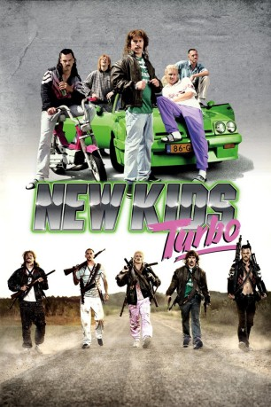

#1513 New Kids Turbo
 
 IMDB-Wertung: 6.4 / 10
IMDB-Wertung: 6.4 / 10  Metascore: 0
Metascore: 0 
Das Dörfchen Maaskantje in den Niederlanden wäre wohl niemandem ein Begriff, wenn nicht die Proletengang New Kids, bestehend aus Richard, Robbie, Rikkert, Barrie und Gerrie, für Unruhe sorgen würde. Ihr Lebensalltag ist fest in den Neunzigerjahren verwurzelt und dreht sich um getunte Autos, Bier, Goldkettchen, Schnauzbärte, Vokuhila-Frisuren sowie bunte Pumphosen. Da sie alle keine Arbeit mehr haben, beschließen sie kurzerhand, keinen müden Euro für ihren Konsum mehr zu bezahlen, und ziehen damit den Ärger der Regierung auf sich.
Jahr: 2010
Dauer: 84 Minuten
FSK: 16
Land: Niederlande Studio: Constantin FilmTonspuren:
Untertitel:
Auflösung: 1080p (1920x864) Größe: 4136 MB
Genre: Action, Komödie
Regisseur: Steffen Haars, Flip Van der Kuil
Drehbuch: Steffen Haars, Flip Van der Kuil
Soundtrack: Junkie XL
Darsteller:
 Huub Smit als Richard Batsbak
Huub Smit als Richard Batsbak- Steffen Haars als Robbie Schuurmans
- Flip Van der Kuil als Barrie Butsers
- Reinout Oerlemans als Reinout Oerlemans
- Patrick Stoof als Gerrie's boss
- Antonie Kamerling als Peter Kelder
- Tim Haars als Gerrie van Boven
- Wesley van Gaalen als Rikkert van Boven
- Nicole van Nierop als Manuela
- Ruud Matthijssen als Henk Snackbar
- Lars Boekhorst als Guy with Down syndrome
- Bart de Rijk als Cop Adrie
- Daan van Dijsseldonk als Reporter
- René Eljon als E.N.G. camera operator
- Samuel Both als Danny
- Djim Leenheers als Nicky
- Hwa Chao Chung als Chinese man
- Guido Pollemans als D'N Dave
- Filip Bolluyt als Chief commissioner
- Peter Aerts als Peter Aerts
- Jody Bernal als Jody Bernal
- Ad van Kempen als Farmer
- Frank Lammers als Foreman
- Hans Teeuwen als Rikkert's boss
- Karin Bruers als Gerrie's mother
- Dick Broekman als Kidnapper
- Pepijn Cladder als Gas station attendant
- Peer Van den Berg als Managing director CWI
- Rutger de Bekker als Bailiff
- Yvonne Burger als Perfect family
- Niels Burger als Perfect family
- Theo Maassen als Man 1 in café
- Martijn Bouwman als Man 2 in café
- Bert Terhaar als Man in wheelchair
- Huub Goossens als Bartender
- Annemieke Bakker als Callgirl
- Jiggy Djé als Stoners
- Spacekees als Stoners
- Tim Goossens als Little boy
- Dirk Smit als Busdriver
- Jules Seegers als Croupier
- Edward van der Wegen als Sniper
- Roy Reymound als Garbage collectors
- Annabel van Ewijk als Parent
- Peter Vernhout als Parent
- Rimke Burger als Baby
- Adrie Bolwerk als Grandpa
- Harry van Rijthoven als Minister of defence
- Henry van Loon als Man 1
- Bob Wilbers als Man 2
Datei: X:\2-Dilogie(N-Z)\New Kids\New Kids Turbo (2010, FSK16, 1920x864).mkv seit 13.07.2015
Festplatte: HD Collection-2(A-Z)-3(A-M)
 Alle Filme aus Gruppe '2-Dilogie(N-Z)\New Kids'
Alle Filme aus Gruppe '2-Dilogie(N-Z)\New Kids'